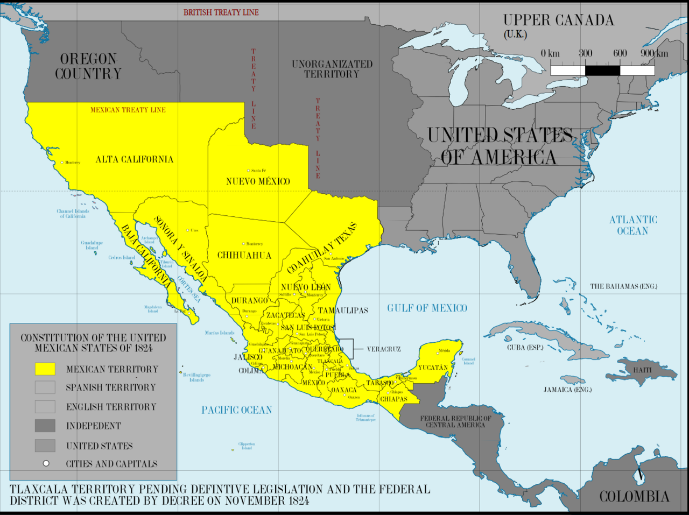
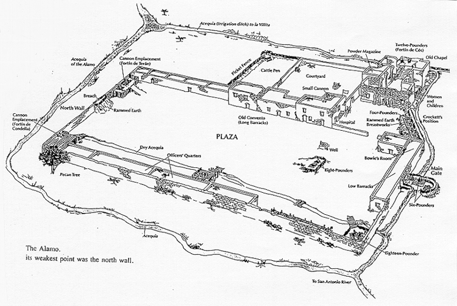
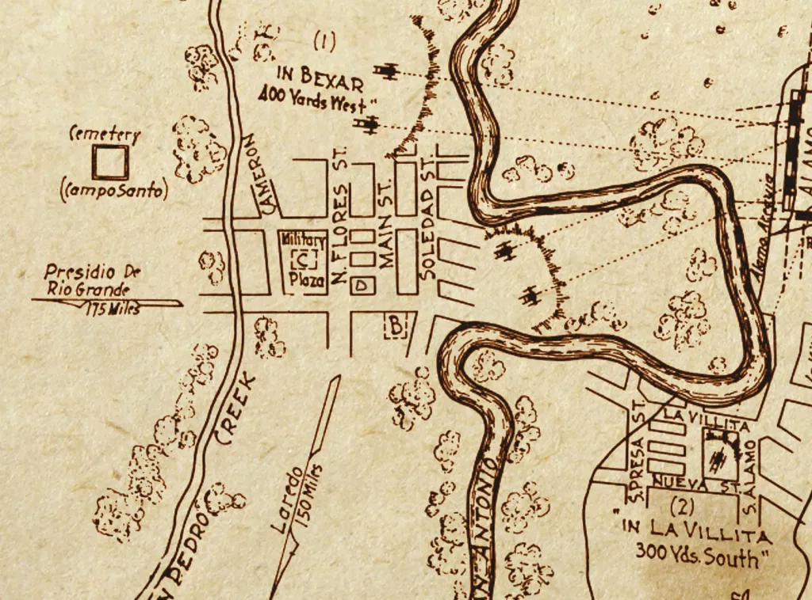

Instituto Técnico Honduras
Batalla del Álamo
VIRREINATO DE NUEVA ESPAÑA 1819

El Álamo.
El punto más débil era el muro norte.


Dato
En una carta enviada al gobernador Henry Smith, Bowie argumentó que «la salvación de Texas depende en gran medida de mantener a Béjar fuera de las manos del enemigo. Este lugar sirve como la guardia de frontera militar, y si estuviera en posesión de Santa Anna, no hay fortaleza que pueda repeler su marcha hacia Sabine». El documento terminaba con lo siguiente: «El coronel Neill y yo hemos llegado a la resolución solemne de que preferimos morir en estas zanjas en vez de dárselas al enemigo».